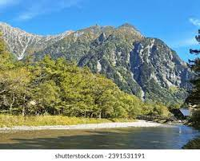
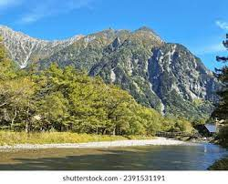

coxbazar ture guide
As life gets monotonous with every passing day, the most incredible way to relax is to go somewhere completely different. The beach is as far away from work as feasible for those in the city. From the longest sandy beach in the world to famous traditional food and seafood, Cox's Bazar has made itself one of Bangladesh's most prominent tourist destinations. Cox's Bazar is located on the southwest coast of Bangladesh, about 150 km (90 miles) south of the city of Chattogram (Chittagong).
A visit to Cox's Bazar can undoubtedly provide a break from everything that is bothering your mental growth. So don't forget to check out this blog detailing Cox's Bazar with everything you can explore while visiting Cox's Bazar.

 
